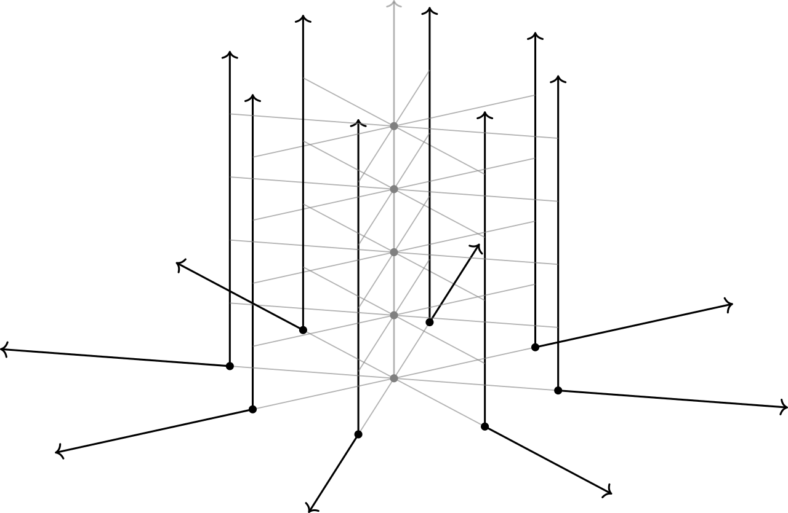
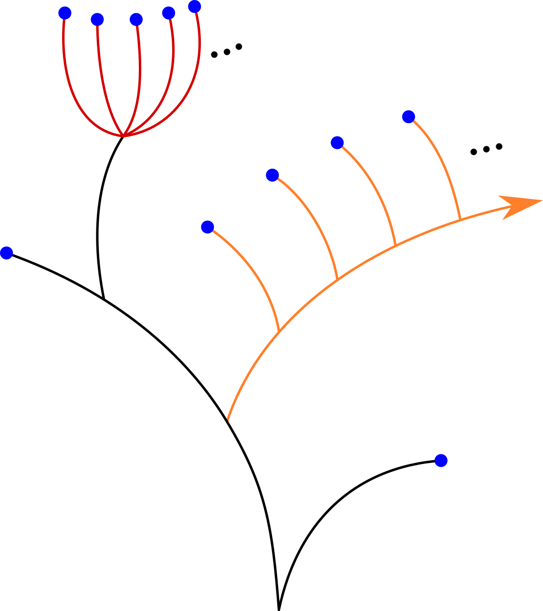

|  |
End spaces
The ends of a graph can be thought of as points at infinity towards which its one-way infinite paths converge.
Adding the ends to a graph extends its structure naturally, and the arising extension is the foundation of modern infinite graph theory.
If the graph is locally finite in that all its vertices have only finitely many neighbours, then the extension is a well-known and thoroughly studied compactification with various applications.
But if the graph is not locally finite, then the extension is not a compactification, and there are still many open questions.
For instance, which graphs admit end-faithful spanning trees, spanning trees whose one-way infinite paths roughly correspond to the ends of the graph?
|
|  |
Star-comb series
The star-comb lemma is a standard tool in infinite graph theory which tells us something about the nature of connectedness in infinite graphs:
that the way in which they link up their infinite sets of vertices can take two fundamentally different forms, a star or a comb.
Stars and combs, however, do not exclude each other, and so it is natural to ask for structures whose existence is dual,
in the sense of complementary, to the existence of a star or a comb at a given vertex set.
Bürger and I determined complementary structures for stars, combs, and all relevant combinations thereof, in a series of four papers.
The techniques that we used in our proofs span the whole breadth of non-set-theoretic infinite graph theory and include tools from general topology.
As a consequence, the series establishes a new unified perspective on the whole arsenal of combinatorial and topological tools in infinite graph theory.
|